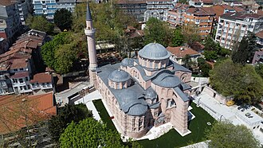

Overview
Saint-Sauveur-in-Chora est un des plus beaux exemples d'église byzantine. L'église est située dans le district stanbouliote occidental d'Edirne Kapı. En 1511, l'église fut convertie en mosquée par les Turcs Ottomans. Elle devint un musée en 1948, puis est reconvertie en mosquée le 21 août 2020 par décret présidentiel du chef d'État turc Recep Tayyip Erdoğan.
كنيسة خورا أو متحف قعرية هي كنيسة بيزنطية في إسطنبول، تُعتبر من أجمل الآثار البيزنطية الباقية والتي مرت بِعِدة عُصور. والتي تَقع بالجُزء الغربي من بلدية الفاتح.
The Chora Church or Kariye Mosque was a Byzantine church, now converted to a mosque, in the Edirnekapı neighborhood of Fatih district, Istanbul, Turkey. It is famous for its outstanding Late Byzantine mosaics and frescos.
Kariye Camii veya eski adıyla Azize Kurtarıcı Hora Kilisesi, İstanbul'un Fatih ilçesinin Edirnekapı semtinde camiye çevrilmiş bir Rum Ortodoks kilisesi ve müze.
Masjid Kari atau yang sebelumnya bernama Biara Khora adalah sebuah masjid peninggalan Bizantium yang berada di distrik Fatih, Provinsi Istanbul, Turki. Masjid ini didirikan pada tahun 413 M di bekas bangunan gereja Ortodoks Yunani pada abad pertengahan dan sebagian besar bangunan ini digunakan sebagai masjid sejak tahun 1500-an.
جامع مسجد قعریہ استنبول کی مسجد ہے، سابقہ نام خورا گرجا گھر قسطنطنیہ میں قرون وسطی کا ایک بازنطینی یونانی راسخ الاعتقاد گرجا گھر تھا جسے عثمانی دور میں مسجد بنا دیا گیا ۔
Die ehemalige byzantinische Chora-Kirche, auch Sankt Salvator in Chora genannt, von den Osmanen zur Kariye-Moschee umgewidmet, ist ein im Istanbuler Stadtteil Fatih gelegener Sakralbau. Die Mosaiken und Fresken im Stil der Palaiologischen Renaissance zählen zu den bedeutendsten und aufwendigsten Sakralzyklen weltweit. Der Sakralbau war von seiner Errichtung Ende des 11. Jahrhunderts bis ins frühe 16. Jahrhundert eine orthodoxe Kirche. Sie wurde ab 1511 als Moschee genutzt. Nach einer umfangreichen Restaurierung 1948 wurde die Moschee in das „Kariye-Museum“ umgewandelt. Am 21. August 2020 wurde es per Präsidialdekret wieder zur Moschee. Danach wurde die gut erhaltene Moschee erneut vier Jahre lang umfangreich restauriert. Am 6. Mai 2024 wurde sie offiziell als Gebetshaus für die Muslime wiedereröffnet. Im Zuge der Umwandlung in eine Moschee wurden die Fresken in den beiden Gebetsräumen fü
La iglesia de San Salvador de Cora, transcrito a veces erróneamente como Chora, está considerada como uno de los más bellos ejemplos de iglesia bizantina que pueda contemplarse en la actualidad. Está situada en el distrito de Edirnekapi de Estambul, intramuros de la muralla de Teodosio y cerca de una de sus puertas. En el siglo XVI, después de la conquista de Constantinopla por los turcos otomanos, fue reconvertida en mezquita hasta que en 1948 se transformó en museo. El interior está ricamente cubierto por mosaicos y frescos.
La chiesa di San Salvatore in Chora è considerata uno dei più importanti esempi di architettura bizantina sacra ancora esistenti. L'edificio, nato come chiesa ortodossa, è situato nel distretto occidentale di Istanbul, detto Edirnekapı. Nel XVI secolo la chiesa fu trasformata in moschea dai Turchi Ottomani, e divenne museo statale nel 1958, prima di ridiventare moschea nel 2020. L'interno è decorato con mosaici e affreschi, considerati fra le massime espressioni superstiti dell'arte bizantina.
A Igreja de São Salvador em Cora, Mesquita Kariye, Museu de Cora ou Museu Kariye é considerada um dos mais belos exemplos de uma igreja bizantina. A igreja está situada no oeste, no distrito de Edirnekapı, em Istambul. No século XVI, a igreja foi convertida em uma mesquita pelo Império Otomano e tornou-se um museu em 1945. O interior da construção é coberto por mosaicos e afrescos.
De Chorakerk is een middeleeuwse Byzantijnse kerk in Istanboel en werd omstreeks 550 gebouwd. In de zestiende eeuw werd het een moskee, tussen 1945 en 2020 was het een museum en sinds 2020 is het weer een moskee.
科拉教堂，又名卡里耶博物馆 是一拜占庭教堂。它位于伊斯坦布尔法提赫区。它原是一座东正教堂，全名为“乡下神圣救主教堂”，因为它位于君士坦丁堡城墙以外，在金角湾南面。16世纪被奥斯曼帝国改为一座清真寺，1948年成为一座世俗的博物馆。建筑的内部布满了精美的东正教镶嵌画和壁画。
カーリエ博物館 は、イスタンブール旧市街の北西、テオドシウスの城壁と幹線道路が交わるエディルネ門の近くにある博物館である。建物自体は、東ローマ帝国の時代であった11世紀に正教会修道院の付属教会堂として建設されたもので、14世紀まで間欠的に増改築が繰り返された。オスマン帝国の時代になるとモスクに改装され、名称もカーリエ・ジャーミーと改められた。20世紀に入って正教会時代のフレスコ画が発見され、その美術的価値からトルコ共和国によって無宗教の博物館となった。しかし、2020年8月21日、エルドアン大統領は大統領令を以て同博物館を再びモスクとする旨の発表を行った。
카리예 박물관(튀르키예어: Kariye Müzesi)은 터키 이스탄불 구시가지의 북서쪽 테오도시우스 성벽과 간선 도로가 교차하는 에디르네 문 근처에 있는 박물관이다. 건물 자체는 동로마 제국의 시대였던 11세기에 동방 정교회 수도원 부속 교회로 건설된 것으로, 14세기까지 간헐적으로 증축과 개축이 반복되었다. 오스만 제국 시대가 되면서 모스크로 개조되어 명칭도 카리예 자미(Kariye Camii)로 개칭되었지만, 터키로부터 예술적 가치를 인정 받아 종교 박물관이 되었다.
Церковь Христа Спасителя в Полях из ансамбля монастыря в Хоре — византийская церковь в Стамбуле. В 1511 году стала мечетью. С 1948 по 2020 года функционировала как музей Карие. В 2020 году вновь стала мечетью. Входит в число стамбульских памятников Всемирного наследия.
Biserica Chora este un monument de arhitectură bizantină din secolul al XI-lea. Lăcașul a fost transformat în moschee în prima jumătate a secolului al XVI-lea. În secolul al XX-lea clădirea a fost secularizată și transformată în muzeu sub denumirea de Kariye Müzesi. În noiembrie 2019 Consiliul de Stat al Turciei a revocat secularizarea edificiului și i-a dat din nou destinația de moschee. În data de 30 octombrie 2020 a avut loc prima rugăciune musulmană de vineri.
On the map
Documents and links
- Wikipédia — Français
- Wikipédia — العربية
- Wikipédia — English
- Wikipédia — Türkçe
- Wikipédia — Bahasa Indonesia
- Wikipédia — اردو
- Wikipédia — Deutsch
- Wikipédia — Español
- Wikipédia — Italiano
- Wikipédia — Português
- Wikipédia — Nederlands
- Wikipédia — 中文
- Wikipédia — 日本語
- Wikipédia — 한국어
- Wikipédia — Русский
- Wikipédia — Română
- Wikidata — Q849489
Data: Wikidata (CC0), updated every 3 months. The year is the earliest known construction date of the building: for a building that became a mosque later (such as Hagia Sophia), it is that of the original building. Photos: Wikimedia Commons, author and licence on each photo's page.